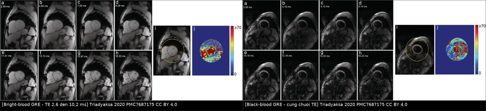
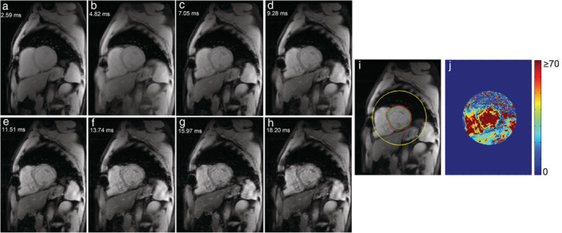
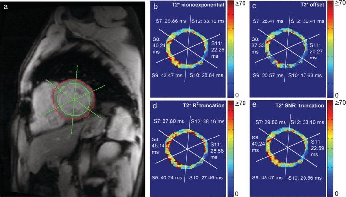
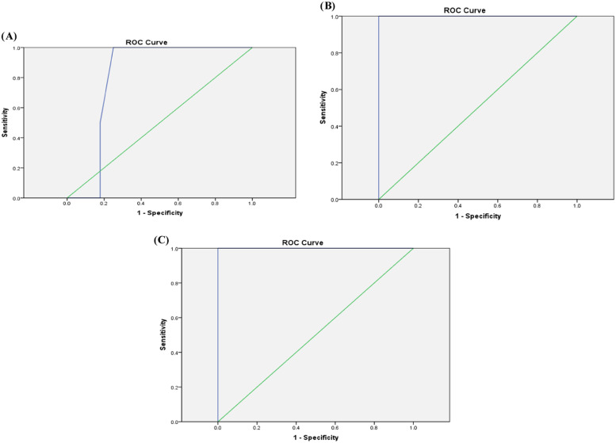

6174 — Quá tải sắt do truyền máu ở trẻ: MRI T2*/R2*, LIC và ngưỡng "trái tim bị rỉ sét" / Transfusional iron overload in children: T2*/R2* MRI and liver iron concentration
Tags: pattern:giam-tin-hieu-T2-star pattern:tu-sat pattern:gan-giam-tin-hieu pattern:tim-giam-tin-hieu vung:gan vung:tim vung:tuy score:T2-star score:LIC protocol:MRI-T2-star protocol:MRI-tim
Mức chắc chắn (certainty): tổng hợp y văn (literature synthesis) — ghép 1 tổng quan kỹ thuật T2* tim (J Magn Reson Imaging 2020, PMC7687175, CC BY — 3 ảnh + 1 ảnh ghép), 1 nghiên cứu bệnh–chứng 60 trẻ sống sót ALL với T2* gan/tim (Hematol Transfus Cell Ther 2024, PMC11726085, CC BY), 1 đoàn hệ 119 bệnh nhân thalassemia theo dõi T2* 5 năm (Tomography 2021, PMC8167609, CC BY), 1 tổng quan nhiễm trùng–tan máu ở hồng cầu hình liềm (Haematologica 2025, PMC11873697, CC BY-NC) và 1 tổng quan thải sắt (Int J Mol Sci 2026, PMC13665008, CC BY). Nhóm không có bệnh nhân của mình; mọi ngưỡng T2* đều ghi rõ cường độ từ trường, vì ngưỡng 1,5 T không dùng được cho 3 T.
Câu chốt: quá tải sắt là tổn thương cơ quan do tích luỹ, không phải "ferritin cao". Ba số phải thuộc: (1) T2 tim < 10 ms* (1,5 T) = ứ sắt nặng, nguy cơ suy tim và biến cố tim; 10–20 ms = trung bình; (2) T2 gan < 2,1 ms** tương ứng **LIC > 15 mg/g khô, còn > 15,4 ms là LIC < 2 mg/g (công thức Garbowski LIC = 0,032 × R2 − 0,14); (3) tim và gan ứ sắt ĐỘC LẬP — trong 119 bệnh nhân thalassemia, T2* tim không tương quan với LIC (p = 0,39) hay ferritin (p = 0,54), nên "gan sạch" không bảo vệ tim.
1. Tổng quan bệnh học – cơ chế hình ảnh (TẠI SAO)
1.1 Vì sao sắt làm mất tín hiệu — vật lý T2*
- Truyền hồng cầu cầu → hemoglobin bị đại thực bào phân huỷ → hemosiderin/ferritin tích trong lysosome của tế bào Kupffer (gan), đại thực bào lách/tuỷ, rồi tế bào cơ tim (không có cơ chế thải sắt chủ động).
- Sắt ở dạng superparamagnetic: tạo gradient từ trường vi mô quanh mỗi hạt → proton mất pha nhanh → giảm T2* (và tăng R2 = 1/T2**). Đây là hiệu ứng phụ thuộc cường độ từ trường: cùng một lượng sắt, 3 T làm giảm T2 mạnh hơn 1,5 T* — nên ngưỡng phải khác nhau.
- Tín hiệu chuỗi xung gradient-echo đa TE giảm theo hàm mũ: S(TE) = S₀ · e^(−TE/T2). Vẽ ln(S) theo TE, độ dốc = −1/T2. Sắt càng nhiều → đường dốc càng đứng → T2* càng ngắn.
- Hệ quả kỹ thuật (rất hay bị bỏ qua):
- TE đầu tiên phải ngắn (~1 ms) — với T2* < 2 ms (gan ứ sắt nặng), TE 2,5 ms đã mất gần hết tín hiệu và không đo được.
- TE dài phải cắt bỏ (truncation) — tín hiệu ở TE dài chỉ còn nhiễu nền; đưa vào hồi quy làm T2* bị ước lượng cao (xem mục 5 và Ca 2).
- Máu trong buồng tim có T2* khác cơ tim; nếu không khử tín hiệu máu (black-blood) hoặc đặt ROI đúng, giá trị cơ tim bị kéo theo máu — ảnh ghép dưới đây cho thấy cùng mặt cắt, hai kỹ thuật.

Trái: bright-blood GRE — máu trong buồng tim sáng, dễ lẫn vào ROI cơ tim. Phải: black-blood GRE — máu bị khử tín hiệu, cơ tim hiện rõ. Cả hai: chuỗi TE tăng dần (a→h) cho thấy tín hiệu cơ tim tối dần, kèm bản đồ T2* (j) thang 0–≥ 70 ms. Nguồn: Triadyaksa P, Oudkerk M, Sijens PE — J Magn Reson Imaging 2020, PMC7687175 Fig. 1–2, CC BY 4.0. Ảnh ghép letterbox, không crop/kéo giãn.1.2 Đường vào của sắt: gan trước, tim sau
- Gan là "kho đệm": sau mỗi đơn vị máu, sắt vào tế bào Kupffer trước; LIC tăng sớm và giảm nhanh khi thải sắt.
- Tim vào chậm, ra chậm: sắt vào cơ tim qua kênh calci týp L và transferrin receptor, tích luỹ nhiều năm; khi đã vào thì thải rất chậm — đó là lý do T2* tim có thể bình thường dù LIC rất cao, và vẫn thấp dù LIC đã về bình thường.
- Tuyến tụy, tuyến yên, tuyến giáp ứ sắt sớm hơn tim ở một số bệnh nhân → đái tháo đường, suy sinh dục, suy giáp; trên MRI, tụy mất tín hiệu T2* là dấu sớm của rối loạn nội tiết.
- Vì sao trẻ sống sót ung thư cũng bị: trong 60 trẻ sống sót ALL 6–18 tuổi, trung bình đã nhận 6.256 ± 2.402 mL hồng cầu khối (143,8 ± 45,5 mL/kg), 43,3% có ứ sắt gan và 3,3% có ứ sắt cơ tim; 66,7% có marker viêm gan C — nghĩa là nhóm này cần theo dõi sau khi kết thúc điều trị, không chỉ trong lúc truyền máu.
2. Mẫu hình + chẩn đoán phân biệt theo vị trí (gamut)
- Gan giảm tín hiệu lan toả: ứ sắt (hemosiderosis/hemochromatosis thứ phát) · mỡ gan (chỉ giảm tín hiệu trên out-of-phase, T2* bình thường) · xơ gan (tín hiệu không đều, có nốt) · nốt sắt (siderotic nodule) trong xơ gan · artefact kim loại/dị vật.
- Cơ tim giảm tín hiệu: ứ sắt cơ tim · nhồi máu cũ (vùng thành mỏng, LGE) · lắng đọng amyloid (tăng T1 mapping, không giảm T2*) · artefact chuyển động/susceptibility ở đáy tim sát phổi.
- Tụy giảm tín hiệu: ứ sắt (thường toàn bộ, đối xứng) · mỡ thay (thường teo, tăng tín hiệu T1) · viêm tụy mạn (vôi hoá, ống giãn).
- Gợi nhớ nhanh: "T2 thấp = SẮT*" — Siderosis/hemosiderosis, Ắ (ứ sắt sau truyền), Thalassemia, nhưng luôn kiểm artefact và mỡ trước khi kết luận.
3. Bảng so sánh phân biệt (ma trận đối chiếu)
| Thực thể (entity) | Hình ảnh điển hình | Chốt vào (rule-in) | Chốt loại (rule-out) | Gợi ý xác nhận |
|---|---|---|---|---|
| Ứ sắt gan (transfusional) | Gan giảm tín hiệu lan toả trên T2*/GRE, mạch máu sáng hơn nhu mô; lách cũng tối nếu còn lách | *T2 gan < 15,4 ms** (LIC > 2 mg/g); < 2,1 ms = nặng | T2* gan bình thường + gan sáng trên in-phase → mỡ, không phải sắt | ROI gan phải tránh mạch; báo T2 + LIC* |
| Ứ sắt cơ tim | Cơ tim tối trên GRE đa TE, đặc biệt vách liên thất; chức năng có thể còn bình thường | T2 tim < 20 ms* (1,5 T); < 10 ms = nặng | T2* > 20 ms + không có LGE/giảm EF → chưa có bằng chứng ứ sắt tim | ROI vách giữa (segment 8+9), black-blood |
| Mỡ gan (steatosis) | Giảm tín hiệu out-of-phase, hồi phục in-phase; T2* bình thường | Mất tín hiệu out-of-phase + T2* bình thường | Không mất tín hiệu ở out-of-phase → không phải mỡ | Dixon / PDFF; không dùng T2* để chẩn đoán mỡ |
| Xơ gan + nốt siderotic | Gan không đều, bờ nốt, nốt tối hơn nhu mô trên T2*/T1 | Nốt tối trên T2 trong gan xơ* | Gan đồng nhất, không nốt → ứ sắt đơn thuần | MRI gan có cản quang + AFP |
| Artefact (kim loại/chuyển động/susceptibility) | Vùng tối khu trú, bờ địa phương hoá, không theo giải phẫu; thay đổi giữa các TE | Tối khu trú + không tái lập khi đổi mặt cắt | Tối lan toả, đối xứng theo giải phẫu → bệnh lý thật | Chạy lại chuỗi, đổi hướng mặt cắt |

Chuỗi GRE đa TE từ a→h (TE 2,59 → 10,20 ms): tín hiệu cơ tim giảm dần; (i) vẽ contour nội–ngoại tâm mạc; (j) bản đồ T2 thang 0–≥ 70 ms (xanh = T2* dài, đỏ = ngắn). Nguồn: Triadyaksa P, Oudkerk M, Sijens PE — J Magn Reson Imaging 2020, PMC7687175 Fig. 1, CC BY 4.0.*4. Protocol chụp + hệ phân độ/điểm chuẩn hoá
4.1 Protocol tối thiểu (bám theo PMC7687175)
- Từ trường: 1,5 T là chuẩn để dùng các ngưỡng dưới đây; nếu chụp 3 T phải dùng bộ ngưỡng 3 T.
- Gan: lát ngang giữa gan, GRE đa TE, TR 80 ms, 20 TE từ 1,1 → 16,3 ms (bước 0,8 ms), góc lật 20°, lát 10 mm, FOV 40 cm, nín thở.
- Tim: trục ngắn giữa thất, ECG-gating, black-blood ưu tiên, ROI vách liên thất (segment 8 + 9), loại pixel T2* > 70 ms khỏi bản đồ.
- Hồi quy: hàm mũ đơn có cắt TE dài; báo T2 (ms)* và R2 (Hz)*, kèm LIC (mg/g khô).
- Theo dõi: T2* tim + LIC mỗi 12 tháng khi ổn; mỗi 6 tháng khi T2* tim < 10 ms** hoặc LIC **> 15 mg/g; cùng một máy, cùng chuỗi xung để so sánh.
4.2 Phân tầng — dùng đúng cường độ từ trường
| Cơ quan | Bình thường | Trung bình | Nặng | Nguồn |
|---|---|---|---|---|
| Tim, 1,5 T | T2* > 20 ms (R2* < 50 Hz) | 10–20 ms (50–100 Hz) | **< 10 ms** (> 100 Hz) | PMC7687175 |
| Tim, 3 T | T2* > 12 ms (R2* < 83 Hz) | 5,5–12 ms (83–181 Hz) | **< 5,5 ms** (> 181 Hz) | PMC7687175 |
| Gan, T2* | > 15,4 ms (LIC < 2 mg/g) | 4,5–15,4 ms (LIC 2–7) | **< 2,1 ms** (LIC > 15) | PMC11726085 |
| Gan, LIC | ≤ 3 mg/g khô | 7–15 mg/g | ≥ 15 mg/g | PMC8167609 |
- Công thức LIC (Garbowski): LIC (mg/g) = 0,032 × R2 (Hz) − 0,14* (PMC11726085). Kiểm tra chéo: T2* 15,4 ms → R2* 64,9 Hz → LIC ≈ 1,94 mg/g; T2* 2,1 ms → R2* 476 Hz → LIC ≈ 15,1 mg/g — hai cách phân tầng khớp nhau.
- Ferritin không thay được MRI, nhưng có ngưỡng dùng được: ở 60 trẻ sống sót ALL, ferritin 205 µg/L phát hiện ứ sắt gan nhẹ (Se 71,4% / Sp 66% / AUC 0,643), 725–850 µg/L phát hiện mức trung bình (Se 100% / Sp 75% / AUC 0,804), 850 µg/L phát hiện mức nặng (Se 100% / Sp 96,2% / AUC 1,00). Lượng máu đã truyền cũng có ngưỡng: 115,1 / 169,4 / 217 mL/kg cho nhẹ / trung bình / nặng.
- Tương quan: ferritin – T2* gan R = 0,705 (p < 0,001); nhưng T2 tim không tương quan* với ferritin, LIC hay lượng máu truyền.
flowchart TD
A[Trẻ truyền máu định kỳ: ferritin >= 850 ug/L hoặc >= 20 don vi] --> B[MRI T2* gan + tim, 1,5 T]
B --> C{T2* tim}
C -->|< 10 ms| D[NANG: tang cuong thai sat, kham tim, sieu am tim moi 3-6 thang]
C -->|10-20 ms| E[TRUNG BINH: duy tri thai sat, MRI lai 6-12 thang]
C -->|> 20 ms| F[Chua u sat tim: theo doi 12 thang]
B --> G{T2* gan / LIC}
G -->|< 2,1 ms hoac LIC > 15| H[U sat gan NANG: thai sat tich cuc, LIC lai 6 thang]
G -->|4,5-15,4 ms| I[U sat gan nhe-trung binh: duy tri]
G -->|> 15,4 ms| J[Gan sach: KHONG suy ra tim sach]
5. Biến thể bình thường và cạm bẫy
- "Gan sạch = tim sạch" là sai lầm chết người. Vì tim vào sắt chậm, một trẻ LIC 25 mg/g vẫn có thể có T2 tim 25 ms* — nhưng nguy cơ tim tăng dần theo tổng lượng máu truyền, không theo LIC hiện tại.
- Ferritin là protein pha cấp — tăng khi viêm/nhiễm trùng, giảm khi thiếu vitamin C; ferritin bình thường không loại trừ ứ sắt và ferritin cao không chứng minh ứ sắt.
- Cùng một pixel, hai giá trị T2 khác nhau tuỳ cách hồi quy:* trong hình dưới, cùng vùng cơ tim cho 29,86 ms (hồi quy đơn thuần), 28,41 ms (có offset), 37,80 ms (cắt theo R²), 29,86 ms (cắt theo SNR). Chênh ~27% đủ để đổi phân tầng nếu ngưỡng nằm giữa — nên luôn so sánh trên cùng phương pháp.
- Ảnh hưởng của mỡ/xơ: gan nhiễm mỡ làm T2* dài giả, xơ gan làm tín hiệu không đều; đọc kèm in/out-of-phase hoặc PDFF.
- Artifact susceptibility ở đáy tim (sát phổi/hoành) làm T2* ngắn giả — tránh đặt ROI ở segment 6/7/11/12 nếu có artifact.
- Máy khác nhau/chuỗi xung khác nhau không so sánh trực tiếp: ngưỡng 1,5 T không áp cho 3 T (3 T làm T2* ngắn hơn ~1,7 lần).
- Trẻ nhỏ không nín thở được — dùng chuỗi thở tự do/trigger, nhưng phải ghi rõ vì giá trị kém tái lập hơn.

Bốn phương pháp hồi quy cho cùng mặt cắt: (b) đơn thuần, (c) có offset, (d) cắt theo R², (e) cắt theo SNR — giá trị từng segment thay đổi tới vài ms. Nguồn: Triadyaksa P, Oudkerk M, Sijens PE — J Magn Reson Imaging 2020, PMC7687175 Fig. 5, CC BY 4.0.6. Tự lượng giá — Blind Quiz
Ca 1 — Trẻ 12 tuổi thalassemia thể nặng, truyền máu 2 đơn vị/tháng từ 3 tuổi. MRI tim trục ngắn, chuỗi GRE đa TE:
- Gợi ý: trẻ mệt, không đau ngực, EF 58%.
- Câu hỏi: Tín hiệu cơ tim thay đổi thế nào từ a→h? Đo T2* ở vùng nào? EF bình thường có loại trừ ứ sắt tim không?
Bấm để hiện đáp án (findings + chẩn đoán)
- Dấu hiệu: tín hiệu cơ tim tối dần khi TE tăng — đúng quy luật S = S₀·e^(−TE/T2); bản đồ T2 màu cho thấy vùng vách liên thất có giá trị đại diện toàn thất.
- Đo ở vách giữa (segment 8 + 9), black-blood, loại pixel > 70 ms.
- EF bình thường KHÔNG loại trừ ứ sắt tim — rối loạn chức năng là dấu muộn; T2* < 10 ms là ngưỡng nguy cơ.
- Nguồn ảnh: Triadyaksa P và cs., PMC7687175 Fig. 1, CC BY 4.0.
Ca 2 — Cùng bệnh nhi, kỹ thuật viên báo T2 vách 37,8 ms; bác sĩ khác đo lại được 29,9 ms trên cùng ảnh:*
- Câu hỏi: Tại sao lệch? Cách nào đúng? Cần ghi gì vào báo cáo để lần sau so sánh được?
Bấm để hiện đáp án
- Nguyên nhân: cắt TE dài (theo R²/SNR) loại bỏ điểm nhiễu nền; nếu không cắt, hồi quy bị kéo lên → T2* dài giả (37,80 vs 29,86 ms).
- Cách đúng: dùng một phương pháp thống nhất, có cắt TE dài, và ghi rõ phương pháp + phần mềm + từ trường trong báo cáo.
- Bài học: chênh ~8 ms đủ đổi phân tầng nếu giá trị nằm quanh 10 hoặc 20 ms.
- Nguồn ảnh: Triadyaksa P và cs., PMC7687175 Fig. 5, CC BY 4.0.
Ca 3 — Trẻ 8 tuổi sống sót ALL, ferritin 900 µg/L, không triệu chứng. Có cần MRI không?

- Câu hỏi: Đọc ba đường ROC: ferritin phân biệt được mức nào tốt nhất? Ferritin 900 µg/L gợi ý gì? MRI sẽ thay đổi xử trí ra sao?
Bấm để hiện đáp án
- 1A (nhẹ): ngưỡng 205 µg/L, AUC 0,643 — kém. 1B (trung bình): 725–850 µg/L, AUC 0,804. 1C (nặng): 850 µg/L, Se 100% / Sp 96,2% / AUC 1,00 — rất tốt.
- Ferritin 900 µg/L nằm trên ngưỡng nặng → cần MRI T2 gan + tim* để xác định mức và phân biệt gan/tim.
- MRI đổi xử trí vì quyết định cường độ thải sắt và theo dõi tim, không chỉ vì ferritin.
- Nguồn ảnh: Sherief LM và cs., Hematol Transfus Cell Ther 2024, PMC11726085 Fig. 1, CC BY 4.0.
Bài liên quan chéo
- 6105 – Hoại tử xương ở trẻ điều trị ALL
- 6154 – Sỏi mật ở trẻ có bệnh tan máu
- 6168 – Suy tụy ngoại tiết ở trẻ: elastase-1 và MRI Dixon
- 6153 – Hạch/khối tồn dư sau điều trị lymphoma ở trẻ
Không dùng để chẩn đoán độc lập khi chưa có người hướng dẫn.